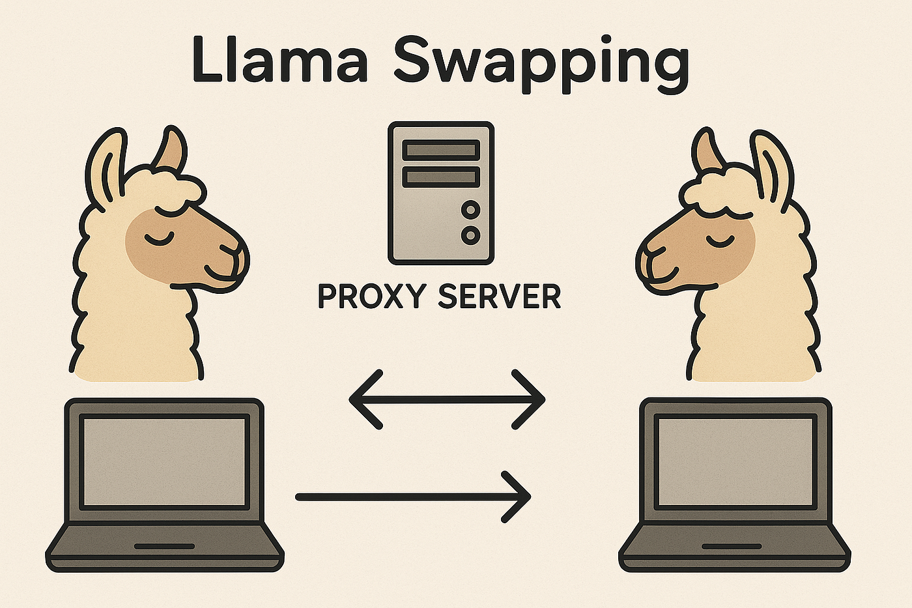

## LlamaSwap: Is This the Alpaca-lypse for Institutional DeFi? (Or Just Another Cute Animal Meme?)
Okay, I’ll admit it. The name alone almost stopped me. LlamaSwap. Sounds like something you’d find on a t-shirt at a quirky alpaca farm, not a serious contender in the institutional DeFi space. But then I dug a little deeper, and well… things got interesting. Reminds me of that time I invested in "Dogecoin Pizza" – purely based on the meme, needless to say, it didn't end well. But this feels…different. Maybe.
Look, I’m not going to lie, the world of decentralized finance (DeFi) can feel like navigating a swamp – a really, really complicated swamp filled with smart contracts, gas fees, and enough acronyms to make your head spin. You've got your Uniswaps, your Aaves, your...well, you get the picture. It's a crowded marketplace. So, what makes LlamaSwap stand out, especially for us big players?
One thing’s for sure: the sheer audacity of their branding is memorable. But beyond the adorable mascot (seriously, have you seen the llama?), LlamaSwap is pitching some serious tech. They’re talking about enhanced liquidity provision, superior order execution, and even – gasp – improved security for large-scale transactions. Sounds too good to be true, right? Part of me still thinks it is. That skeptical voice in my head is whispering about rug pulls and smart contract exploits, and frankly, it's hard to ignore.
But here’s the thing: the institutional investment landscape is changing. We're not just dealing with pennies and dimes anymore. We're talking millions, sometimes billions, being moved around in the crypto sphere. And the existing DeFi platforms, while innovative, haven't always been built with the specific needs of institutions in mind. Think about it: compliance, regulatory hurdles, the sheer volume of transactions...it's a different ballgame.
LlamaSwap, despite the name, seems to be addressing these concerns. Their whitepaper (yes, I actually read it, albeit with multiple cups of coffee) talks about robust auditing processes, enterprise-grade security measures, and APIs designed for seamless integration with existing institutional workflows. That’s the kind of stuff that actually gets my attention.
Now, I'm not saying LlamaSwap is the ultimate solution – that would be reckless, bordering on irresponsible. I've seen enough shiny new crypto projects flame out to know better. The market is volatile, regulation is still evolving, and frankly, we’re still figuring out the long-term implications of decentralized finance.
But here's what intrigues me: the potential. The potential to streamline institutional access to DeFi, to unlock new liquidity pools, and to participate in a market that's only going to grow in importance. LlamaSwap might be a gamble, a risky bet even, but it’s a gamble with a potentially huge payoff. And, let's be honest, a slightly more whimsical name than some of its competitors.
So, where does this leave us? Still pondering, honestly. I haven't made any decisions yet. This article wasn't supposed to be a glowing endorsement, more of a… thought experiment, really. A chance to explore whether a project with a name like LlamaSwap could seriously disrupt the institutional DeFi landscape. The jury's still out, but I'll be watching this space very, very closely. Because, let's face it, who doesn't love a good llama? And maybe, just maybe, a profitable one too.

## Why Institutions Are (Quietly) Eyeing LlamaSwap: A Liquidity Love Story (Maybe?)
Okay, so picture this: you're at a farmer's market, right? You're looking for the perfect heirloom tomato, that deep crimson jewel of summer. But the only vendor selling them is charging a fortune. Why? Because they're the only game in town. Now, imagine another vendor shows up, offering similar tomatoes, but at a fairer price. Suddenly, the original vendor has to adjust. That, in a nutshell, is the allure of LlamaSwap for institutions looking for liquidity in DeFi.
I know what you're thinking: "LlamaSwap? Sounds like a children's cartoon." And yeah, the name is...quirky. But bear with me. What's happening behind the somewhat whimsical name is a serious shift in how institutions are approaching decentralized finance. For too long, they've been stuck wrestling with the high transaction fees and limited liquidity of some of the bigger, more established DEXs. It’s like paying extra for that perfect tomato simply because everyone else does.
Now, LlamaSwap isn't promising a unicorn. It's not a magical solution that will solve all DeFi's problems overnight. Frankly, I still have some reservations. The space is notoriously volatile, and even the most promising projects can crumble under pressure. I’ve seen it happen. Remember that whole "DeFi Summer" hype? Yeah, me too. So, a healthy dose of skepticism is absolutely warranted.
But here's the thing: LlamaSwap, with its novel approach to automated market makers (AMMs), seems to be offering something different. I'm not a blockchain developer, so I can't get into the technical nitty-gritty. But from what I understand – and I've spent far too many hours reading white papers, I’ll admit – their system addresses some of the key pain points institutions have been facing.
One of the most appealing aspects? The potential for lower slippage. Slippage – the difference between the expected price and the actual price when you execute a trade – is a huge concern for large institutional trades. Imagine trying to buy a thousand heirloom tomatoes and the price skyrocketing as you place your order. Ouch. LlamaSwap's architecture, again, from my admittedly limited understanding, seems designed to mitigate this, offering more predictable pricing for substantial transactions.
Another factor? It’s the security and governance aspects. While I'm still navigating the complexities of decentralized governance, the emphasis on transparency and community involvement is intriguing. It feels less like a black box and more like a collaborative project, which, let's face it, is a breath of fresh air in this sometimes opaque world.
Now, am I saying LlamaSwap is the perfect solution? Absolutely not. It’s still early days, and there are undoubtedly challenges ahead. But the attention it's getting from institutional players suggests something significant is afoot. They aren't throwing money at projects casually; they're doing their due diligence. And if the big players are sniffing around, it’s worth paying attention.
This whole journey writing this article has been, well, a journey. I started with a simple question about LlamaSwap and ended up reflecting on the entire DeFi landscape, its promises, its pitfalls, and the constant need for healthy skepticism. Maybe, just maybe, LlamaSwap is a glimpse into a more efficient, transparent, and maybe even – dare I say it? – slightly fairer future for decentralized finance. Or maybe I'm just drawn in by the name. Only time will tell. But one thing's for certain: the farmer's market of DeFi is getting a lot more interesting.
## LlamaSwap's Wild West: Navigating the Compliance Canyon
Okay, so picture this: you're a high-powered institutional investor, not exactly known for your penchant for risky gambles (unless we’re talking about carefully calculated, high-yield bonds, of course). Suddenly, decentralized finance – DeFi – starts whispering sweet nothings of unparalleled liquidity and yield optimization. LlamaSwap, with its charming name and promise of exotic returns, becomes the siren song. But then… the compliance sirens start wailing. Because, let's be honest, DeFi and "easy compliance" are rarely seen in the same sentence.
I've spent the last few months wading through the regulatory mud of LlamaSwap's institutional offering, and let me tell you, it's less "Zen garden" and more "navigating a minefield blindfolded while juggling flaming torches." The challenges are multifaceted, to put it mildly.
First, there's the sheer opacity of the system. Unlike traditional exchanges with clear regulatory oversight and readily available audit trails, LlamaSwap, like many DeFi platforms, operates on a largely decentralized structure. This makes tracing transactions, identifying counterparties, and ensuring compliance with KYC/AML regulations a Herculean task. It feels a bit like trying to track a particularly elusive chameleon in a jungle made of code. Are we even supposed to be able to do this? I'm starting to question the very nature of my job sometimes.
Then there's the issue of sanctions compliance. Knowing exactly where your funds are flowing, especially in a system with such inherent anonymity, is crucial. How do you guarantee that your trades aren't inadvertently supporting sanctioned entities? Is it enough to rely on self-reporting from LlamaSwap? Honestly, it feels like we're playing a game of regulatory Whac-A-Mole, and the moles are breeding faster than we can whack them.
And let's not forget the tax implications. The decentralized nature of LlamaSwap makes accurate tax reporting a nightmare. The constant swapping, yield farming, and other DeFi shenanigans create a complex web of transactions that are incredibly difficult to untangle for tax purposes. I’ve spent countless hours staring at spreadsheets, my eyes glazing over like a donut left out in the sun. Seriously, someone needs to invent a DeFi-to-tax-report converter – that would be a billion-dollar idea, right?
Another major hurdle is the lack of established legal frameworks for DeFi. The regulatory landscape is still largely uncharted territory. Are existing securities laws applicable? What about data privacy regulations? The answers are often vague, conflicting, or simply nonexistent. It's a Wild West out there, folks.
Now, I’m not saying LlamaSwap is inherently malicious. Far from it. The technology is undeniably innovative, and the potential benefits are enormous. But the lack of robust compliance frameworks poses a significant challenge for institutional users like myself. It feels like the technology has outpaced the regulation, leaving a big hole where accountability and clear guidelines should be.
So, where does this leave us? I started this journey with a certain amount of DeFi-fueled optimism, expecting a slightly challenging, yet ultimately manageable experience. The reality, though, is more nuanced. It's a journey of constant learning, adaptation, and a healthy dose of skepticism. We're building bridges across this compliance canyon one painstaking step at a time, hoping that we don't fall into the chasm of non-compliance along the way. It's a messy, frustrating process, but someone has to do it. And maybe, just maybe, this process will contribute to a more regulated and responsible DeFi future. That's my hope, anyway. Fingers crossed!
## The Llama's Luggage: Navigating Custody Solutions with LlamaSwap
Okay, so picture this: you're finally heading off on that backpacking trip across Southeast Asia you've been dreaming of. You've got your trusty, slightly-worn backpack – packed to the brim with questionable choices and even more questionable souvenirs from your last trip. But where do you put your passport, your emergency cash, your… well, your precious Bitcoin? That's the question, right? Except replace "Bitcoin" with vast institutional holdings of crypto assets, and "backpacking trip" with the exhilarating, slightly terrifying world of decentralized finance (DeFi).
That’s the core challenge facing institutions looking to leverage the power of platforms like LlamaSwap: custody. How do you securely manage and protect massive digital assets within a DeFi ecosystem built on principles of trustlessness and decentralization? It’s a bit of a paradox, isn’t it? You're aiming for the decentralized freedom of DeFi, but you also need the rock-solid security that only a meticulously planned system can provide.
LlamaSwap, with its novel approach to liquidity provision and trading, offers exciting opportunities. But let’s be honest, the thought of entrusting millions (or billions!) of dollars worth of crypto to, well, anything feels… unsettling. We're not exactly talking about stashing your spare change under the mattress here. We're talking about serious institutional money, subject to all kinds of regulatory scrutiny and market volatility. I, for one, find it slightly nerve-wracking, even though I understand the technical underpinnings – and I’m writing about this!
So, what are the solutions? Well, it's not a one-size-fits-all answer, and frankly, that’s part of the exciting and terrifying beauty of it. Multi-sig wallets are a clear starting point – spreading the keys amongst different custodians introduces an element of redundancy and security. Think of it like having multiple copies of your passport, hidden in different, very secure locations. Smart contracts can automate certain functions, potentially reducing human error, which is a huge plus.
However, smart contracts are only as good as the code that underpins them. And that brings us to another critical consideration: audits. Thorough, independent audits are crucial to ensuring the security and integrity of the entire custody solution. It’s not enough to just trust – you need verification. We're talking about professional-grade, deep-dive security analyses, not just a quick glance over the code. You want the kind of audit that makes you feel like your assets are as safe as Fort Knox – maybe even safer, because Fort Knox hasn't been hacked lately, as far as I know!
Then there’s the issue of insurance. In the world of traditional finance, insurance is pretty much a given. But the DeFi world is still finding its footing in this area. Finding insurance providers that are comfortable covering the risks inherent in DeFi custody is crucial, adding another layer of protection for institutions.
This whole exploration has left me with a healthy dose of respect for the complexities involved. I initially thought the answer would be straightforward, a simple plug-and-play solution. The reality, as is so often the case, is far more nuanced. It's a journey, a careful balancing act between leveraging the innovative potential of DeFi and ensuring the robust security that institutions rightfully demand. There's no magic bullet, only a careful consideration of multiple strategies and continuous vigilance.
So, are we there yet? Are institutions fully equipped to navigate the custody challenges within LlamaSwap and similar platforms? Not quite. But the journey of exploring, innovating, and building better solutions is well underway. And that's what makes this exciting – the chance to build a more secure and accessible future for institutional involvement in DeFi. The Llama's luggage might be a little heavy, but with careful planning, it can arrive safely at its destination.
## LlamaSwap's Liquidity Pools: A Deep Dive (and a Few Shallow Splashes)
Remember that time I tried to trade my Beanie Baby collection for a Tamagotchi? Market inefficiency, right? The value wasn't properly reflected. That's kind of what got me thinking about liquidity pools, especially the massive ones popping up on LlamaSwap. It's a whole other level of "market inefficiency," except instead of Beanie Babies, we're talking about crypto. And instead of a Tamagotchi, it's... well, anything really.
LlamaSwap, for the uninitiated (and hey, no judgment here – the crypto space moves fast), is a decentralized exchange (DEX) with a focus on… well, llamas, apparently. But beyond the adorable branding (seriously, check out the website), they've been quietly building some seriously impressive liquidity pools. We're talking genuinely massive pools, the kind that make your average DeFi project's liquidity look like a kiddie pool.
And that's where things get interesting. Because, on one hand, having gigantic liquidity pools sounds fantastic. It means smoother trades, less slippage, and generally a more stable experience. You know, the kind of experience where you don't accidentally sell your ETH for a handful of dust because the pool dried up faster than my hopes for a Beanie Baby comeback.
But then, a tiny voice in the back of my head starts whispering: "Is this too good to be true?" Are these gargantuan pools artificially inflated? Are there hidden risks lurking beneath the surface of seemingly flawless trades? Am I overthinking this? Probably. But that's the beauty (and terror) of DeFi. It's constantly pushing you to question, to analyze, to become a slightly more cynical (and hopefully, wiser) investor.
What I find most fascinating is the sheer scale. These aren't your run-of-the-mill pools with a few hundred thousand dollars sloshing around. We're talking millions, sometimes tens of millions, locked up in various pairings. It’s mind-boggling to think about that amount of capital sitting there, ready to be swapped at a moment's notice. This speaks volumes about the growing maturity (and perhaps, overconfidence?) of the crypto market.
Now, I’m not saying LlamaSwap is some kind of magical money-printing machine. Far from it. There are always risks involved. Impermanent loss, for example, is a real beast, no matter how big the pool. But the sheer size of these liquidity pools does suggest something significant: a growing level of trust and confidence in the platform itself. People are clearly willing to lock up significant amounts of capital, betting on LlamaSwap's security and stability.
So, what’s the verdict? Are LlamaSwap’s large-scale liquidity pools a sign of a bright, stable future for DeFi, or a potential bubble waiting to burst? Honestly, I don't have a definitive answer. That's the thing about this space; it's not about easy answers. It's about constant learning, adapting, and, yes, even a little bit of healthy skepticism.
This whole journey of exploring LlamaSwap's liquidity pools has been less about finding a definitive answer and more about highlighting the inherent complexities and uncertainties of the DeFi world. It's reminded me that while big numbers look impressive, the real value lies in understanding the underlying mechanics, the risks involved, and the ever-shifting landscape of the crypto market. Maybe next time I’ll try trading my NFTs instead of Beanie Babies. At least then, I'd have a shot at understanding the market dynamics a little better.
## Risk Management Practices for Institutional LlamaSwap Users: It's Not Just About the Alpacas, People
Okay, let's be honest. The name "LlamaSwap" alone conjures up images of adorable, fluffy creatures gracefully navigating a decentralized exchange. But the reality? It's less about cuddly alpacas and more about navigating a complex web of smart contracts, volatile markets, and the ever-present risk of…well, losing your shirt. I should know. I once lost a week's worth of coffee budget trying to time a market on a less-than-reputable DEX (don't ask).
Now, I'm not a financial advisor – I'm just someone who's learned a few hard lessons the expensive way. But as a seasoned observer of the DeFi space, and someone who's seen institutional players fumble with LlamaSwap (or its ilk), I feel compelled to share some thoughts on effective risk management. Because let's face it, even institutions – with their supposedly sophisticated risk models – can get caught out. Remember Celsius? Yeah, exactly.
So, what are we talking about here? Not just the usual "diversify your portfolio" mantra (though, obviously, that's crucial). We're talking about the specific challenges LlamaSwap presents. Its innovative features, while attractive, also introduce unique risks. Things like the potential for smart contract vulnerabilities (remember the DAO hack? Shivers down my spine), the complexities of liquidity pools, and the ever-present threat of rug pulls.
One of the biggest issues I see? Overconfidence. Institutional players, with their massive war chests, sometimes seem to believe they're immune to the wild swings of the crypto market. They dive headfirst into complex strategies without sufficient due diligence, assuming their sheer size will protect them. It's the financial equivalent of a rhino thinking it can outrace a cheetah – it's not going to end well.
Therefore, rigorous auditing of smart contracts should be a non-negotiable. Not just a cursory glance, but a deep dive performed by reputable, independent firms. Imagine this as your alpaca's pre-flight check before it attempts to jump over a particularly large canyon – you want to make sure all systems are go. This might seem like an obvious point, but you'd be surprised how many institutional players cut corners here.
Then there’s the issue of operational security. Is your institutional setup robust enough to prevent insider threats or external hacks? Do you have adequate security protocols in place to protect your private keys and limit unauthorized access? These aren't just theoretical concerns – they're real threats that can wipe out even the most carefully crafted strategies.
Moreover, consider the nuances of liquidity pools. While offering enticing yields, they come with inherent risks of impermanent loss. Do you fully understand the implications? Have you stress-tested your strategies against various market conditions? Knowing your risk tolerance is key; if you're not comfortable with potential losses, maybe LlamaSwap isn't the right place for your institution's capital.
Finally, I think it's important to admit something: there's a lot we don't know. The DeFi space is constantly evolving; new vulnerabilities and attack vectors are always emerging. Humility is key. No amount of planning can fully protect you from every potential risk. Embracing that uncertainty, maintaining constant vigilance, and having contingency plans are crucial aspects of a truly effective risk management strategy.
Looking back, this wasn’t just about LlamaSwap; it was about a broader reflection on how even the most powerful players can be humbled by the unpredictable nature of decentralized finance. There are no guarantees, only careful planning, thorough due diligence, and a healthy dose of caution. So, go forth and conquer those DeFi markets, but remember – even alpacas need a good shepherd.
## LlamaSwap: Herding Institutional Cats (and Crypto)
Remember that scene in "The Big Short" where Mark Baum is screaming about the housing market? That feeling of impending doom mixed with the almost manic glee of knowing you’re onto something huge? That's kind of how I feel about LlamaSwap’s potential within institutional portfolios. Okay, maybe not the screaming part, but the "huge" part definitely applies.
LlamaSwap, for those not yet in the know (and honestly, you're missing out on some seriously interesting tech), is a decentralized exchange (DEX) built on... well, let’s just say it's built on some seriously impressive tech. Its focus on liquidity provision and efficient trading is undeniably impressive, but the question buzzing around the institutional world isn't "Is it good?" It's "How the heck do we integrate this thing?"
That’s the million-dollar question, isn’t it? Integrating any new technology into a tightly controlled institutional environment is like trying to herd cats – and these cats are wearing tiny, expensive suits. Risk management teams have more spreadsheets than Excel can handle, compliance is a beast of its own, and then there’s the whole "understanding the underlying blockchain technology" hurdle.
Now, I’m not saying LlamaSwap is inherently more difficult to integrate than other DeFi platforms. It isn't. But the sheer potential for return, coupled with the inherent complexities of DEXs generally, creates a unique challenge. You've got the allure of potentially higher yields and greater liquidity compared to traditional exchanges, but you also face the added complexities of smart contract risks, custodial concerns, and the ever-present threat of rug pulls (though, I'd argue LlamaSwap's established track record significantly mitigates that fear).
And here's where it gets interesting. I've talked to several portfolio managers who are absolutely hesitant, clinging to the familiar comfort of centralized exchanges. They understand the potential, but the risk-aversion ingrained in their institutional DNA is hard to shake. It's a classic clash between innovation and established procedure, a battle fought in the boardrooms of the financial world, not just on the blockchain.
But then you talk to the younger generation of portfolio managers, the ones who've grown up alongside crypto, and the tune changes. They see LlamaSwap, not as a threat, but as a potential game-changer. They're more comfortable navigating the technical complexities, more attuned to the decentralized ethos, and frankly, more willing to embrace the inherent volatility.
So, where does that leave us? Somewhere in the middle, I think. The integration of LlamaSwap (and other DEXs) into institutional portfolios is not a binary "yes" or "no" situation. It’s a gradual process, a careful dance between innovation and risk management, a delicate balancing act between embracing the future and safeguarding the present. It's about finding the right balance—which might look vastly different across firms.
This journey, this exploration of integrating LlamaSwap into the often-staid world of institutional finance, feels less like a definitive conclusion and more like the first step on a longer road. It’s a journey fueled by both excitement and apprehension – and that, my friends, is the real human story behind the technology. The algorithms are impressive, but it's the people, the decision-makers, the risk assessors, and the innovators who truly determine the future of LlamaSwap within the institutional landscape. And I, for one, am eagerly watching how it unfolds.
## LlamaSwap and the Enterprise: A Match Made in... DeFi Heaven? (Maybe?)
Okay, let's be honest. The world of decentralized finance (DeFi) can feel a little like navigating a Klingon battlecruiser blindfolded. I mean, smart contracts, liquidity pools, impermanent loss... it's enough to make you want to stick to good old-fashioned spreadsheets. But then you hear whispers about LlamaSwap, and suddenly, those spreadsheets seem… primitive.
My own journey into LlamaSwap's world started with a healthy dose of skepticism. My background is in traditional finance, and the sheer audacity of a decentralized exchange (DEX) promising speed, efficiency, and security felt... well, audacious. But the more I dug, the more I realized that LlamaSwap isn't just another DeFi flash in the pan. Its strategic partnerships are what truly make it compelling, especially for enterprises.
Now, I know what you’re thinking: “Enterprises? DeFi? Are we talking about a corporate retreat in a yurt on the blockchain?” (Don't judge, I've always secretly wanted to do that.) But seriously, the idea isn't as outlandish as it sounds. Enterprises are increasingly looking towards blockchain for streamlined processes, improved transparency, and reduced reliance on intermediaries. LlamaSwap, with the right partnerships, can be a significant piece of that puzzle.
One crucial aspect is integration. Imagine a large supply chain company needing to quickly and securely transfer funds internationally. The existing banking infrastructure can be a nightmare – slow, expensive, and riddled with bureaucracy. But through strategic partnerships with established payment processors or ERP (Enterprise Resource Planning) systems, LlamaSwap could offer a seamless integration into their existing workflows. That's not just theory; it's the kind of practical application that could revolutionize how these businesses operate.
Another compelling factor is security. This is where partnerships become even more critical. LlamaSwap needs to build trust with businesses who are naturally risk-averse. Collaborations with reputable auditing firms, cybersecurity companies, and insurance providers can significantly enhance the platform's credibility and provide enterprises with the confidence they need to adopt the technology. Think of it as getting the DeFi equivalent of a AAA credit rating – a powerful endorsement.
Of course, there are still hurdles. Regulatory uncertainty, the ever-evolving landscape of blockchain technology, and the inherent risks associated with decentralized systems are all valid concerns. This isn't a "plug-and-play" solution, and it requires careful consideration and robust risk management strategies. It’s also not about simply slapping a LlamaSwap logo on everything; it's about creating true synergy.
But here’s the thing: I've started to see the potential. I initially approached LlamaSwap with a healthy dose of “show me, don’t tell me”, but the thoughtfulness behind their partnership strategy is impressive. It's not just about grabbing headlines; it's about building a sustainable ecosystem that genuinely benefits businesses.
This journey writing this article has been a learning experience for me. I began with skepticism, moved to cautious optimism, and now find myself genuinely excited about the potential of LlamaSwap's future. It’s a reminder that even in the seemingly abstract world of DeFi, practical applications and carefully forged partnerships can create real-world impact. Maybe that corporate yurt retreat isn't such a bad idea after all… but first, let’s get some LlamaSwap integrations up and running.

## LlamaSwap and the Elephants in the Room (or, How I Learned to Stop Worrying and Love the Decentralized Future)
Okay, so picture this: I'm at a stuffy industry conference – think beige carpets, aggressively polite networking, and enough free pens to start my own stationery empire. Someone mentions LlamaSwap, and the surrounding conversation immediately shifts from hushed whispers about regulatory compliance to a slightly manic buzz. It was like watching a group of normally sedate accountants discover the electric slide. The contrast was...striking.
This got me thinking. LlamaSwap, for those not in the know (and bless your innocent hearts), is a decentralized exchange, a DEX. But it's not just any DEX. It's aiming for something bigger, bolder – something that could actually shake up the institutional world. And that's where things get interesting, and, let's be honest, a little terrifying.
Institutions. These behemoths of finance, with their rigid processes, legacy systems, and… well, let's just say their aversion to anything that smells faintly of "disruption." Getting them to embrace LlamaSwap, or any decentralized technology for that matter, feels like trying to teach a herd of elephants to tap dance. It’s possible, theoretically, but requires a level of patience and innovative choreography that might break even the most experienced trainer.
The potential, though? Oh boy, the potential. Imagine the efficiency gains, the reduced costs, the transparency. LlamaSwap, with its focus on [mention specific features like security, speed, or user experience], could offer a compelling alternative to the traditional, often opaque, systems institutions currently rely on.
But there are hurdles, some bigger than others. Regulatory uncertainty looms large, of course. It's the 800-pound gorilla in the room, and it's wearing a very serious suit. How do you navigate compliance when your very nature is decentralized? It’s a puzzle I don’t have the answer to, frankly.
Then there's the issue of trust. Institutions are, understandably, risk-averse. They need assurances, audits, and probably a whole team dedicated to explaining blockchain technology in terms of…well, I'm not entirely sure what terms would work, but hopefully something less intimidating than "Byzantine Fault Tolerance."
Furthermore, the user experience needs to be something institutions can actually handle. While the tech might be revolutionary, it’s not going to win over skeptical executives if it's harder to navigate than the tax code. Usability is everything, especially when we're talking about millions (or billions) of dollars.
Am I being overly pessimistic? Perhaps. But I'm also a realist. The transition won't be a smooth, elegant dance. It's going to be messy, chaotic, and probably involve a few bruised egos along the way.
However, this isn’t a doom and gloom prediction. The seeds of change are being sown. We are seeing early adoption, and the more people understand the potential benefits of decentralized finance, the more likely institutional adoption will become. Plus, the sheer cost-effectiveness and increased efficiency are undeniable arguments.
So, where does this leave us? At the beginning of a long, winding road, perhaps. But it’s a road worth traveling. My initial skepticism has been tempered by a cautious optimism. The image of those elephants tap-dancing is still a little far-fetched, but maybe, just maybe, they’ll at least learn to two-step. And that, my friends, is progress. LlamaSwap’s future within institutions isn't guaranteed, but the potential is too significant to ignore. And that's what keeps me, a slightly cynical observer from the world of finance, genuinely excited.
tags: LlamaSwap, Institutional Investing, DeFi, Decentralized Finance, Crypto Investment, Digital Assets, Algorithmic Trading, High-Frequency Trading, Blockchain Technology, Alternative Investments